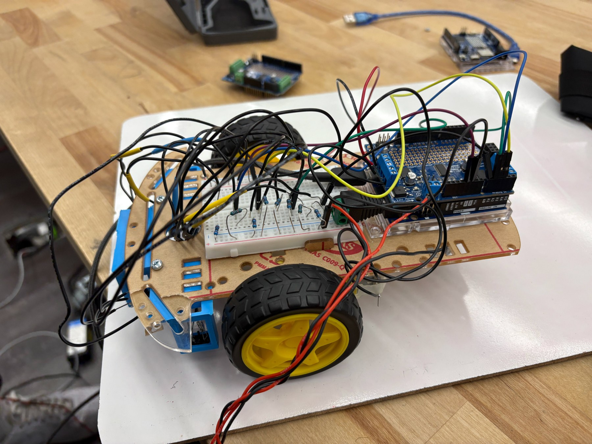
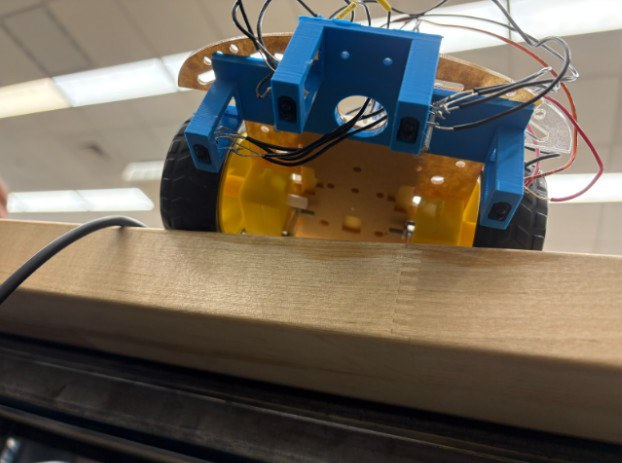
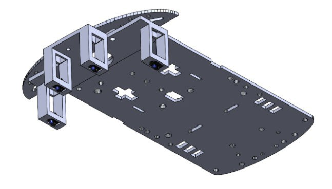
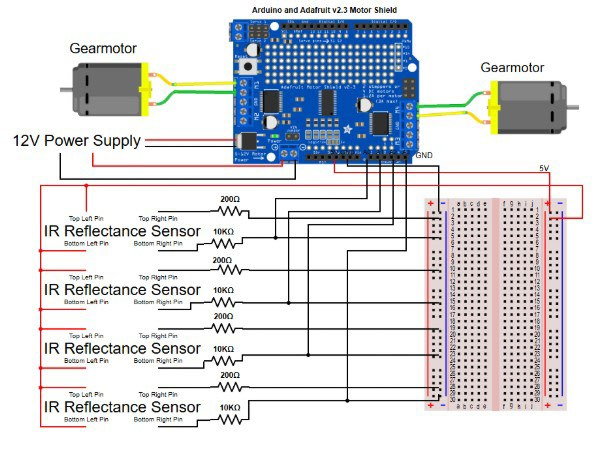
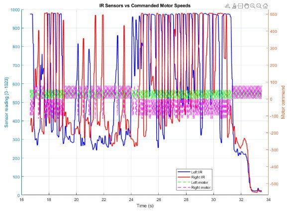

The challenge
Our team integrated sensing, motor actuation, and control so a two-wheel robot could follow a non-circular tape course. An Arduino Uno and Adafruit Motor Shield drove two DC gearmotors, with two IR sensors measuring floor reflectivity.
Mechanical & electrical integration
We designed 3D-printed sensor holders for repeatable spacing, easy removal, and protected wiring. Calibration led to a 7 mm sensor standoff. Although the mounts and circuit were designed to support four sensors, the tested controller used only the front two.
A split 12 V supply powered the Arduino and motor shield, with sensors using the Arduino’s 5 V supply and a shared ground. USB Serial was used for data logging; tuning changes required reflashing the code.




Calibrating the control loop
Typical analog readings were about 950 over tape and 450 over the floor, giving a threshold near 700. Short pulse-and-stop pivots and a 4 ms debounce delay reduced switching chatter. Different base PWM values compensated for the motors’ mechanical bias.




Results & next iteration
The robot followed the tape with a simple bang-bang controller. Sensor threshold crossings aligned with steering commands in the logged data. The test also highlighted motor dead zones and the limitations of blocking pivot loops.
A next iteration would use non-blocking control, add hysteresis or filtering, investigate PD control for corners, and log multiple laps to quantify repeatability.